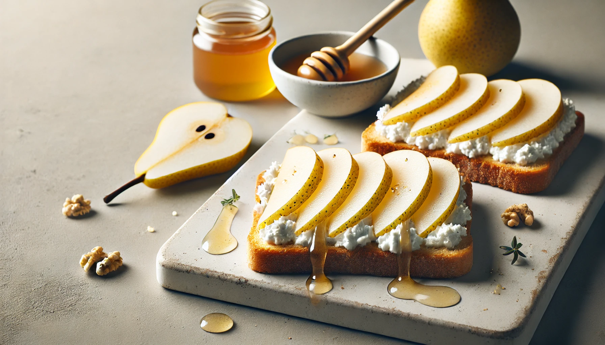

4-Week Toddler Breakfast Plan
Week 4 | Fun Combos & Nutrient Boosts
This final week blends soft textures, gentle spices, and fun formats to keep toddlers excited about breakfast. All recipes are quick, wholesome, and easy to prep!

Breakfast Recipe
Pear & Ricotta Toast
Soft, creamy, and naturally sweet.
Ingredients
½ ripe pear, peeled and sliced thin
2 tbsp ricotta cheese
½ slice wholegrain toast
Instructions
1. Toast bread lightly.
2. Spread with ricotta.
3. Top with thin slices of pear. Cut into toddler-size bites.
Breakfast Recipe
Egg & Veggie Rice Cakes
Perfect finger food full of protein and color.
Ingredients
1 egg
1 tbsp grated zucchini or carrot
1 small rice cake (low salt)
Instructions
1. Whisk egg and mix in grated veggie.
2. Cook as a mini omelet and cut into strips.
3. Serve with broken-up rice cake on the side.
Breakfast Recipe
Blueberry Oat Porridge
A purple-hued breakfast full of antioxidants.
Ingredients
3 tbsp oats
½ cup milk or water
¼ cup blueberries (fresh or thawed)
Instructions
1. Simmer oats and milk in a pot.
2. Add mashed blueberries and stir until creamy.
3. Cool before serving.
Breakfast Recipe
Mashed Chickpea Spread with Toast
Iron-rich and super creamy.
Ingredients
¼ cup cooked chickpeas
1 tsp olive oil
½ slice wholegrain bread
Instructions
1. Mash chickpeas with olive oil until smooth.
2. Spread on toast and cut into toddler-friendly pieces.
Breakfast Recipe
Strawberry & Yogurt Mini Muffins
Sweetened with fruit and packed with calcium.
Ingredients
¼ cup chopped strawberries
1 egg
2 tbsp plain yogurt
3 tbsp oat or whole wheat flour
Instructions
1. Mix all ingredients.
2. Spoon into greased mini muffin tray.
3. Bake at 180°C (350°F) for 15 minutes.
Breakfast Recipe
Cucumber & Cream Cheese Roll-Ups
Refreshing, creamy finger food.
Ingredients
½ slice soft wholegrain tortilla or bread
2 tsp cream cheese
2 thin cucumber strips
Instructions
1. Spread cream cheese on tortilla.
2. Add cucumber, roll tightly, and slice into small spirals.
Breakfast Recipe
Warm Applesauce & Cinnamon Oats
Cozy and full of fiber and flavor.
Ingredients
3 tbsp oats
½ cup water or milk
2 tbsp unsweetened applesauce
Pinch of cinnamon
Instructions
1. Cook oats in liquid until soft.
2. Stir in applesauce and cinnamon.
3. Let cool before serving.
Toddler Breakfast Tips ☛ Here